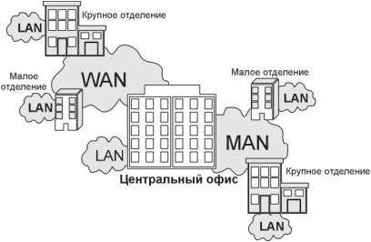

Администрирование рабочих станций и серверов
Администрирование активного сетевого оборудования
Проектирование и внедрение беспроводных сетей любой сложности
Для населения и юридических лиц, настройка сетевого оборудования:
-Базовая настройка роутера, Wi-Fi, модема (подходит для дома и офиса) - 500 р.
-Настройка шейпера (равномерное деление скорости между клиентами) - от 500 р.
-Настройка резервирования двух и более каналов связи (два провайдера)- от 500 р.
-Настройка IP VPN (объединение филиалов через интернет в локальную сеть)- от 500 р.
-Настройка уличных Wi-Fi мостов (без юстировки, монтажных работ и выезда)- от 500 р.
-Настройка уличной базовой станции (без монтажных работ и выезда) - от 1 000 р.
-Настройка уличного клиентского Wi-Fi устройства (без монтажа и выезда) - от 500 р.
Не перечисленные варианты конфигураций и монтаж рассчитываются индивидуально.
Контакты:
Дальний восток и восточная Сибирь: 8(4112)-25-49-49 (доб.1)
Остальная Россия: 8-988-139-32-58
Магазин сетевого оборудования
Wi-Fi Авторизация
Интернет в Анапе
Задачи и цели сетевого администрирования.
Современные корпоративные информационные системы по своей природе всегда являются распределенными системами. Рабочие станции пользователей, серверы приложений, серверы баз данных и прочие сетевые узлы распределены по большой территории. В крупной компании офисы и площадки соединены различными видами коммуникаций, использующих различные технологии и сетевые устройства. Главная задача сетевого администратора — обеспечить надежную, бесперебойную, производительную и безопасную работу всей этой сложной системы.
Будем рассматривать сеть как совокупность программных, аппаратных и коммуникационных средств, обеспечивающих эффективное распределение вычислительных ресурсов. Все сети можно условно разделить на 3 категории:
• локальные сети (LAN, Local Area Network);
• глобальные сети (WAN, Wide Area Network);
• городские сети (MAN, Metropolitan Area Network).
Глобальные сети позволяют организовать взаимодействие между абонентами на больших расстояниях. Эти сети работают на относительно низких скоростях и могут вносить значительные задержки в передачу информации. Протяженность глобальных сетей может составлять тысячи километров. Поэтому они так или иначе интегрированы с сетями масштаба страны.
Городские сети позволяют взаимодействовать на территориальных образованиях меньших размеров и работают на скоростях от средних до высоких. Они меньше замедляют передачу данных, чем глобальные, но не могут обеспечить высокоскоростное взаимодействие на больших расстояниях. Протяженность городских сетей находится в переделах от нескольких километров до десятков и сотен километров.
Локальные сети обеспечивают наивысшую скорость обмена информацией между компьютерами. Типичная локальная сеть занимает пространство в одно здание. Протяженность локальных сетей составляет около одного километра. Их основное назначение состоит в объединении компьютеров (как правило, одной компании или организации) для совместной работы.
Механизмы передачи данных в локальных и глобальных сетях существенно отличаются. Глобальные сети ориентированы на соединение — до начала передачи данных между абонентами устанавливается соединение (сеанс). В локальных сетях используются методы, не требующие предварительной установки соединения, — пакет с данными посылается без подтверждения готовности получателя к обмену.
Кроме разницы в скорости передачи данных, между этими категориями сетей существуют и другие отличия. В локальных сетях каждый компьютер имеет сетевой адаптер, который соединяет его со средой передачи. Городские сети содержат активные коммутирующие устройства, а глобальные сети обычно состоят из групп мощных маршрутизаторов пакетов, объединенных каналами связи. Кроме того, сети могут быть частными или сетями общего пользования.
Сетевая инфраструктура строится из различных компонент, которые условно можно разнести по следующим уровням:
• кабельная система и средства коммуникаций;
• активное сетевое оборудование;
• сетевые протоколы;
• сетевые службы;
• сетевые приложения.
Каждый из этих уровней может состоять из различных подуровней и компонент. Например, кабельные системы могут быть построены на основе коаксиального кабеля («толстого» или тонкого»), витой пары (экранированной и неэкранированной), оптоволокна. Активное сетевое оборудование включает в себя такие виды устройств, как повторители (репитеры), мосты, концентраторы, коммутаторы, маршрутизаторы. В корпоративной сети может быть использован богатый набор сетевых протоколов: TCP/IP, SPX/IPX, NetBEUI, AppleTalk и др.
Основу работы сети составляют так называемые сетевые службы (или сервисы). Базовый набор сетевых служб любой корпоративной сети состоит из следующих служб:
• службы сетевой инфраструктуры DNS, DHCP, WINS;
• службы файлов и печати;
• службы каталогов (например, Novell NDS, MS Active Directory);
• службы обмена сообщениями;
• службы доступа к базам данных.
Самый верхний уровень функционирования сети — сетевые приложения.
Сеть позволяет легко взаимодействовать друг с другом самым различным видам компьютерных систем благодаря стандартизованным методам передачи данных, которые позволяют скрыть от пользователя все многообразие сетей и машин.
Все устройства, работающие в одной сети, должны общаться на одном языке – передавать данные в соответствии с общеизвестным алгоритмом в формате, который будет понят другими устройствами. Стандарты – ключевой фактор при объединении сетей.
Для более строгого описания работы сети разработаны специальные модели. В настоящее время общепринятыми моделями являются модель OSI (Open System Interconnection) и модель TCP/IP (или модель DARPA). Обе модели будут рассмотрены в данном разделе ниже.
Прежде чем определить задачи сетевого администрирования в сложной распределенной корпоративной сети, сформулируем определение термина «корпоративная сеть» (КС). Слово «корпорация» означает объединение предприятий, работающих под централизованным управлением и решающих общие задачи. Корпорация является сложной, многопрофильной структурой и вследствие этого имеет распределенную иерархическую систему управления. Кроме того, предприятия, отделения и административные офисы, входящие в корпорацию, как правило, расположены на достаточном удалении друг от друга. Для централизованного управления таким объединением предприятий используется корпоративная сеть.
Основная задача КС заключается в обеспечении передачи информации между различными приложениями, используемыми в организации. Под приложением понимается программное обеспечение, которое непосредственно нужно пользователю, например, бухгалтерская программа, программа обработки текстов, электронная почта и т.д. Корпоративная сеть позволяет взаимодействовать приложениям, зачастую расположенным в географически различных областях, и обеспечивает доступ к ним удаленных пользователей. На рис. 1.1 показана обобщенная функциональная схема корпоративной сети.
Обязательным компонентом корпоративной сети являются локальные сети, связанные между собой.
В общем случае КС состоит из различных отделений, объединенных сетями связи. Они могут быть глобальными (WAN) или городскими (MAN).

О НАС:
- Наша команда располагает штатом системных администраторов, инженеров и программистов с опытом работы не менее 5 лет, помощниками с опытом работы не менее 2-х лет.
- Все системные администраторы, инженеры и программисты, перед включением в команду ЦИТРУС, проходят многоступенчатое двухмесячное тестирование на практике.
- Для тестирования мы содержим собственную распределённую IT инфраструктуру масштабов Якутска.
- Руководитель нашей службой IT аутсорсинга, по совместительству идейный вдохновитель и создатель компании, имеет образование в области информационной безопасности и подходит к обеспечению ИТ безопасности с точки зрения человеческого фактора в первую очередь. Во вторую очередь, но не менее тщательно, рассматривается безопасность программных и аппаратных средств IT инфраструктуры.
 Магазин
Web
IT
Магазин
Web
IT